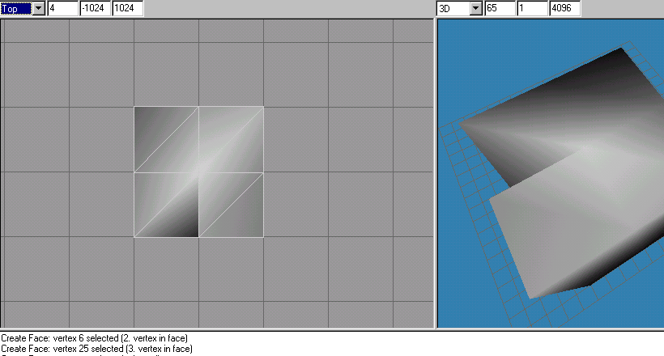
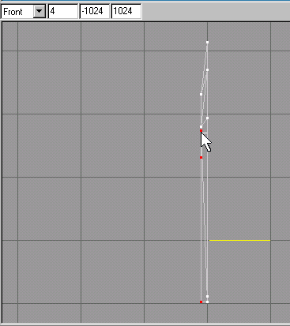

|
|
Now you are about to create the faces of the knife edge. A face is a 3 sided polygon, which takes 3 vertices to make up. Traditionally a face is only one sided, meaning if you look at it from its backside, you will not be able to see it on the video screen. Now you know why some models seem to have parts missing! They really are there but you are looking at their back faces.
Click on the "Face" button. Go to the "Left" viewport. In order to create a face properly so that you can see it when you are looking at it from this view, you will click on 3 vertices in a counter-clockwise motion. (See Figure 1.12).

Figure 1.11 Selecting the Face tool
Figure 1.12 Creating the 1st "Face"
Continue to create the faces in this fashion. You should pay attention to the way you are creating them as well for a 3 sided face may look a little strange if you do not put some thought in the arrangement. For example if you are to come to an corner of a box and you chose a vertex for the third face that was not on the plane as the top edge where the other two were chosen, it would look as though someone smashed in your square box or dented it! If you look at Figure 1.13 you will see an example of this. The author of the box should have selected vertices that should not be used and used the"Edit->Hide" Selection command on the menu selections.

Figure 1.13 Bad "Face" creation of a square box
At this point you need to save and name your file, which will be a reference file, as we are not going to create animations yet. You will name it: "knife2(ref).ms3d." Just select the "File->Save" on the menu selections.
Once you have created all the faces necessary to get the knife blades sharp edge we will proceed with a 3rd path of vertices that will be parallel to the 2nd path that we created. (See Figure1.14).

Figure 1.14 3rd Vertex creation path
You will have to select the 3 vertices that form this 3rd path as we have done before. Move them as before to the left to match up with the 2nd paths x-position.

Figure 1.15 3rd Vertex path alignment to 2nd Vertex path
|
|